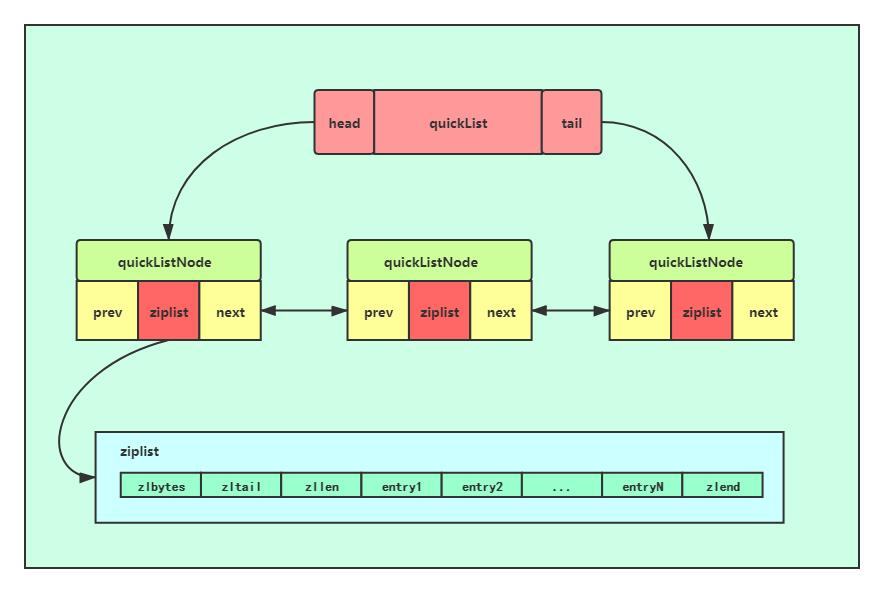
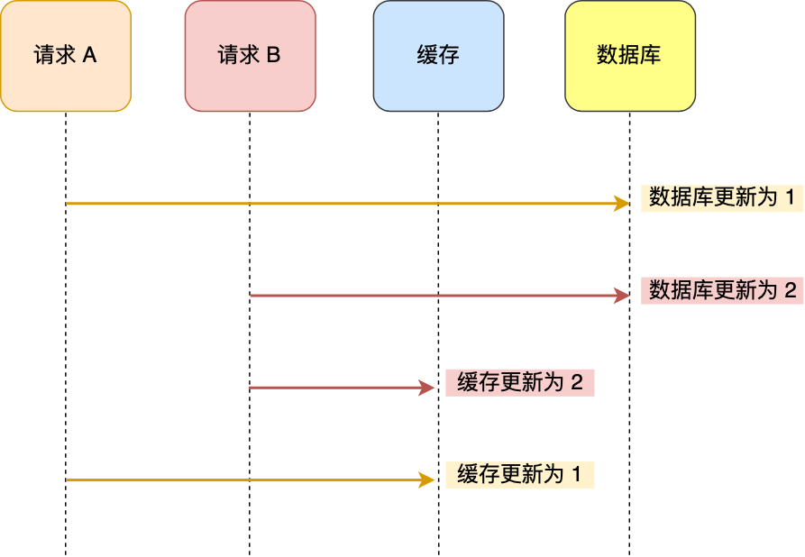
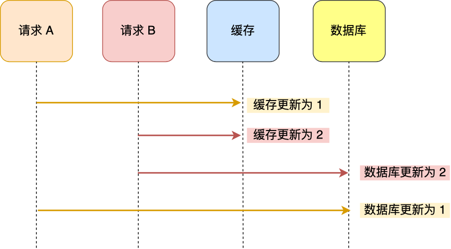

“redis从入门到放弃”
redis从入门到放弃
1.什么是redis
内存数据库， kv数据库，多数据结构数据库(string,list,set,zset,hash)
1 |
|
2.redis总览
2.1 单线程
Redis 单线程指的是「接收客户端请求->解析请求 ->进行数据读写等操作->发送数据给客户端」这个过程是由一个线程（主线程）来完成的，这也是我们常说 Redis 是单线程的原因。
其他线程：
BIO_CLOSE_FILE，关闭文件任务队列：当队列有任务后，后台线程会调用 close(fd) ，将文件关闭
BIO_AOF_FSYNC，AOF刷盘任务队列：当 AOF 日志配置成 everysec 选项后，主线程会把 AOF 写日志操作封装成一个任务，也放到队列中。当发现队列有任务后，后台线程会调用 fsync(fd)，将 AOF 文件刷盘
BIO_LAZY_FREE，lazy free 任务队列：当队列有任务后，后台线程会 free(obj) 释放对象 / free(dict) 删除数据库所有对象 / free(skiplist) 释放跳表对象redis 6.0后的版本：
虽然 Redis 的主要工作（网络 I/O 和执行命令）一直是单线程模型，但是在 Redis 6.0 版本之后，也采用了多个 I/O 线程来处理网络请求，这是因为随着网络硬件的性能提升，Redis 的性能瓶颈有时会出现在网络 I/O 的处理上。所以为了提高网络 I/O 的并行度，Redis 6.0 对于网络 I/O 采用多线程来处理。但是对于命令的执行，Redis 仍然使用单线程来处理，所以大家不要误解 Redis 有多线程同时执行命令。
Redis 6.0 版本引入的多线程 I/O 特性对性能提升至少是一倍以上。
Redis 6.0 版本支持的 I/O 多线程特性，默认情况下 I/O 多线程只针对发送响应数据（write client socket），并不会以多线程的方式处理读请求（read client socket）。要想开启多线程处理客户端读请求，就需要把 Redis.conf 配置文件中的 io-threads-do-reads 配置项设为 yes。

2.2 高性能
落盘数据库的瓶颈：IO
单台设备的 Redis 的 QPS（Query Per Second，每秒钟处理完请求的次数） 是 MySQL 的 10 倍，Redis 单机的 QPS 能轻松破 10w，而 MySQL 单机的 QPS 很难破 1w。
所以，直接访问 Redis 能够承受的请求是远远大于直接访问 MySQL 的，所以我们可以考虑把数据库中的部分数据转移到缓存中去，这样用户的一部分请求会直接到缓存这里而不用经过数据库。
2.3 持久化
- AOF 日志：每执行一条写操作命令，就把该命令以追加的方式写入到一个文件里；
- RDB 快照：将某一时刻的内存数据，以二进制的方式写入磁盘；
- 混合持久化方式：Redis 4.0 新增的方式，集成了 AOF 和 RBD 的优点；
2.3.1 AOF 日志
Redis 在执行完一条写操作命令后，就会把该命令以追加的方式写入到一个文件里，然后 Redis 重启时，会读取该文件记录的命令，然后逐一执行命令的方式来进行数据恢复。

- Redis 执行完写操作命令后，会将命令追加到 server.aof_buf 缓冲区；
然后通过 write() 系统调用，将 aof_buf 缓冲区的数据写入到 AOF 文件，此时数据并没有写入到硬盘，而是拷贝到了内核缓冲区 page cache，等待内核将数据写入硬盘；
具体内核缓冲区的数据什么时候写入到硬盘，由内核决定。 - 在 redis.conf 配置文件中的 appendfsync 配置项可以有以下 3 种参数可填：
- Always，这个单词的意思是「总是」，所以它的意思是每次写操作命令执行完后，同步将 AOF 日志数据写回硬盘；
- Everysec，这个单词的意思是「每秒」，所以它的意思是每次写操作命令执行完后，先将命令写入到 AOF 文件的内核缓冲区，然后每隔一秒将缓冲区里的内容写回到硬盘；
- No，意味着不由 Redis 控制写回硬盘的时机，转交给操作系统控制写回的时机，也就是每次写操作命令执行完后，先将命令写入到 AOF 文件的内核缓冲区，再由操作系统决定何时将缓冲区内容写回硬盘。
2.3.2 RDB 快照
全盘快照，每次执行快照，都是把内存中的「所有数据」都记录到磁盘中。可以用save和bgsave进行RDB快照，bgsave是创建子进程进行快照
1 | bgsave 900 1 |
- 流程：
2.3.2 RDB 和 AOF 结合
开启配置：
1 | aof-use-rdb-preamble yes |
- 当开启了混合持久化时，在 AOF 重写日志时，
fork出来的重写子进程会先将与主线程共享的内存数据以 RDB 方式写入到 AOF 文件，然后主线程处理的操作命令会被记录在重写缓冲区里，重写缓冲区里的增量命令会以 AOF 方式写入到 AOF 文件，写入完成后通知主进程将新的含有 RDB 格式和 AOF 格式的 AOF 文件替换旧的的 AOF 文件。使用了混合持久化，AOF 文件的前半部分是 RDB 格式的全量数据，后半部分是 AOF 格式的增量数据。
2.4 和memcache对比
- Redis 支持的数据类型更丰富（String、Hash、List、Set、ZSet），而 Memcached 只支持最简单的 key-value 数据类型；
- Redis 支持数据的持久化，可以将内存中的数据保持在磁盘中，重启的时候可以再次加载进行使用，而 Memcached 没有持久化功能，数据全部存在内存之中，Memcached 重启或者挂掉后，数据就没了；
- Redis 原生支持集群模式，Memcached 没有原生的集群模式，需要依靠客户端来实现往集群中分片写入数据；
- Redis 支持发布订阅模型、Lua 脚本、事务等功能，而 Memcached 不支持；
3.redis数据结构
- String：缓存对象、常规计数、分布式锁、共享 session 信息等。
- List：消息队列（但是有两个问题：1. 生产者需要自行实现全局唯一 ID；2. 不能以消费组形式消费数据）等。
- Hash：缓存对象、购物车等。
- Set：聚合计算（并集、交集、差集）场景，比如点赞、共同关注、抽奖活动等。
- Zset：排序场景，比如排行榜、电话和姓名排序等。

3.1对应的底层数据结构算法
3.1.1 String
常用命令: set get incr decr append
源码位置：sds.c sdsalloc.c
encoding：int、raw和 embstr。
int: 数字类型
raw: 大于32字节
embstr: 小于等于32字节
底层结构
SDS：简单动态字符串
SDS 不仅可以保存文本数据，还可以保存二进制数据。因为 SDS 使用 len 属性的值而不是空字符来判断字符串是否结束，并且 SDS 的所有 API 都会以处理二进制的方式来处理 SDS 存放在 buf[] 数组里的数据。所以 SDS 不光能存放文本数据，而且能保存图片、音频、视频、压缩文件这样的二进制数据。
SDS 获取字符串长度的时间复杂度是 O(1)。因为 C 语言的字符串并不记录自身长度，所以获取长度的复杂度为 O(n)；而 SDS 结构里用 len 属性记录了字符串长度，所以复杂度为 O(1)。
Redis 的 SDS API 是安全的，拼接字符串不会造成缓冲区溢出。因为 SDS 在拼接字符串之前会检查 SDS 空间是否满足要求，如果空间不够会自动扩容，所以不会导致缓冲区溢出的问题。
3.1.2 LIST
常用命令： lpush lpop rpush rpop blpop blpush
数据结构：quicklist
quicklist:
ziplist：
含义：
SET
简介：Set 类型是一个无序并唯一的键值集合，它的存储顺序不会按照插入的先后顺序进行存储。
一个集合最多可以存储 2^32-1 个元素。概念和数学中个的集合基本类似，可以交集，并集，差集等等，所以 Set 类型除了支持集合内的增删改查，同时还支持多个集合取交集、并集、差集。
常用命令： SADD SREM SISMEMBERS SCARD SISMEMBER SPOP SRANDMEMBER
运算命令： SINTER SINTERSTORE SUNION SDIFF
数据结构：hashtable intset
ZSET
Zset 类型（有序集合类型）相比于 Set 类型多了一个排序属性 score（分值），对于有序集合 ZSet 来说，每个存储元素相当于有两个值组成的，一个是有序结合的元素值，一个是排序值。
有序集合保留了集合不能有重复成员的特性（分值可以重复），但不同的是，有序集合中的元素可以排序。
常用命令： ZADD ZREM ZSCORE ZCARD ZINCRBY ZRANGE SRANDMEMBER
运算命令： ZUNIONSTORE ZINTERSTORE
Zset 类型的底层数据结构是由压缩列表或跳表实现的：
如果有序集合的元素个数小于 128 个，并且每个元素的值小于 64 字节时，Redis 会使用压缩列表作为 Zset 类型的底层数据结构；
如果有序集合的元素不满足上面的条件，Redis 会使用跳表作为 Zset 类型的底层数据结构；
跳表：
HASH
常用命令： hset hget hgetall hlen hdel hincrby
数据结构：listpack hashtable
Hash 类型的底层数据结构是由压缩列表或哈希表实现的：
如果哈希类型元素个数小于 512 个（默认值，可由 hash-max-ziplist-entries 配置），所有值小于 64 字节（默认值，可由 hash-max-ziplist-value 配置）的话，Redis 会使用压缩列表作为 Hash 类型的底层数据结构；
如果哈希类型元素不满足上面条件，Redis 会使用哈希表作为 Hash 类型的 底层数据结构。
listpack:
4. 过期策略
4.1 惰性策略
惰性删除不是去主动删除，而是在你要获取某个key 的时候，redis会先去检测一下这个key是否已经过期，如果没有过期则返回给你，如果已经过期了，那么redis会删除这个key，不会返回给你。
优点：因为每次访问时，才会检查 key 是否过期，所以此策略只会使用很少的系统资源，因此，惰性删除策略对 CPU 时间最友好。
缺点：如果一个 key 已经过期，而这个 key 又仍然保留在数据库中，那么只要这个过期 key 一直没有被访问，它所占用的内存就不会释放，造成了一定的内存空间浪费。所以，惰性删除策略对内存不友好。
4.2 定期策略
每隔一段时间「随机」从数据库中取出一定数量的 key 进行检查，并删除其中的过期key。
1、从过期字典中随机抽取 20 个 key；
2、检查这 20 个 key 是否过期，并删除已过期的 key；
3、如果本轮检查的已过期 key 的数量，超过 5 个（20/4），也就是「已过期 key 的数量」占比「随机抽取 key 的数量」大于 25%，则继续重复步骤 1；如果已过期的 key 比例小于 25%，4、则停止继续删除过期 key，然后等待下一轮再检查。
优点：通过限制删除操作执行的时长和频率，来减少删除操作对 CPU 的影响，同时也能删除一部分过期的数据减少了过期键对空间的无效占用。
缺点：难以确定删除操作执行的时长和频率。如果执行的太频繁，就会对 CPU 不友好；如果执行的太少，那又和惰性删除一样了，过期 key 占用的内存不会及时得到释放。
4.3 定时策略
在设置 key 的过期时间时，同时创建一个定时事件，当时间到达时，由事件处理器自动执行 key 的删除操作。
优点：可以保证过期 key 会被尽快删除，也就是内存可以被尽快地释放。因此，定时删除对内存是最友好的。
缺点：在过期 key 比较多的情况下，删除过期 key 可能会占用相当一部分 CPU 时间，在内存不紧张但 CPU 时间紧张的情况下，将 CPU 时间用于删除和当前任务无关的过期键上，无疑会对服务器的响应时间和吞吐量造成影响。所以，定时删除策略对 CPU 不友好。
4.4 redis策略
惰性删除+定期删除
4.5 LRU算法
最近最少使用
根据LRU算法的理念，我们需要：
一个参数cap来作为最大容量
一种数据结构来存储数据，并且需要1. 轻易地更新最新的访问的数据。2. 轻易地找出最近最少被使用的数据，当到达cap时，清理掉。
在这里，我们用到的数据结构是：hashmap+双向链表。
1.利用hashmap的get、put方法O(1)的时间复杂度，快速取、存数据。
2.利用doublelinkedlist的特征（可以访问到某个节点之前和之后的节点），实现O(1)的新增和删除数据。
当key2再次被使用时，它所对应的node3被更新到链表头部。
缺点：
需要用链表管理所有的缓存数据，这会带来额外的空间开销；
当有数据被访问时，需要在链表上把该数据移动到头端，如果有大量数据被访问，就会带来很多链表移动操作，会很耗时，进而会降低 Redis 缓存性能。
偶尔
redis的改进：
Redis 实现的是一种近似 LRU 算法，目的是为了更好的节约内存，它的实现方式是在 Redis 的对象结构体中添加一个额外的字段，用于记录此数据的最后一次访问时间。
当 Redis 进行内存淘汰时，会使用随机采样的方式来淘汰数据，它是随机取 5 个值（此值可配置），然后淘汰最久没有使用的那个。
Redis 实现的 LRU 算法的优点：
不用为所有的数据维护一个大链表，节省了空间占用；
不用在每次数据访问时都移动链表项，提升了缓存的性能；
但是 LRU 算法有一个问题，无法解决缓存污染问题，比如应用一次读取了大量的数据，而这些数据只会被读取这一次，那么这些数据会留存在 Redis 缓存中很长一段时间，造成缓存污染。
4.6 LFU算法
最近不经常使用
redisObject的LRU高16位记录时间，低8位记录访问次数，按照访问次数做淘汰。
5. redis缓存
5.1 缓存雪崩、缓存击穿、缓存穿透
缓存雪崩：
当大量缓存数据在同一时间过期（失效）时，如果此时有大量的用户请求，都无法在 Redis 中处理，于是全部请求都直接访问数据库，从而导致数据库的压力骤增，严重的会造成数据库宕机，从而形成一系列连锁反应，造成整个系统崩溃，这就是缓存雪崩的问题。
解决方案：
均匀设置过期时间；
互斥锁；
双 key 策略；
后台更新缓存；
缓存击穿：
如果缓存中的某个热点数据过期了，此时大量的请求访问了该热点数据，就无法从缓存中读取，直接访问数据库，数据库很容易就被高并发的请求冲垮，这就是缓存击穿的问题
解决方案
- 互斥锁
- 不给热点数据设置过期时间
 缓存穿透：
当用户访问的数据，既不在缓存中，也不在数据库中，导致请求在访问缓存时，发现缓存缺失，再去访问数据库时，发现数据库中也没有要访问的数据，没办法构建缓存数据，来服务后续的请求。那么当有大量这样的请求到来时，数据库的压力骤增，这就是缓存穿透的问题。
缓存穿透：
当用户访问的数据，既不在缓存中，也不在数据库中，导致请求在访问缓存时，发现缓存缺失，再去访问数据库时，发现数据库中也没有要访问的数据，没办法构建缓存数据，来服务后续的请求。那么当有大量这样的请求到来时，数据库的压力骤增，这就是缓存穿透的问题。

解决方案：
非法请求的限制
缓存空值或者默认值
使用布隆过滤器快速判断数据是否存在，避免通过查询数据库来判断数据是否存在
布隆过滤器：
布隆过滤器会通过 3 个操作完成标记：
第一步，使用 N 个哈希函数分别对数据做哈希计算，得到 N 个哈希值；
第二步，将第一步得到的 N 个哈希值对位图数组的长度取模，得到每个哈希值在位图数组的对应位置。
第三步，将每个哈希值在位图数组的对应位置的值设置为 1；
5.2 缓存一致性问题
四种策略：
先更新缓存，再更新数据库；
先更新数据库，再更新缓存；
先删除缓存，再更新数据库；
先更新数据库，再删除缓存。
5.2.1 删除还是更新
更新：
先更新数据库，再更新缓存的场景：
先更新缓存，再更新数据库的场景：
结论： 无论是「先更新数据库，再更新缓存」，还是「先更新缓存，再更新数据库」，这两个方案都存在并发问题，当两个请求并发更新同一条数据的时候，可能会出现缓存和数据库中的数据不一致的现象。
先删除缓存，再更新数据库

- 先删除缓存，再更新数据库，在「读 + 写」并发的时候，还是会出现缓存和数据库的数据不一致的问题
先更新数据库，再删除缓存

结论：
先更新数据库，再删除缓存也是会出现数据不一致性的问题，但是在实际中，这个问题出现的概率并不高。
「先更新数据库 + 再删除缓存」的方案，是大概率可以保证数据一致性的。
但是不是绝对的，先更新数据库成功，但是删除失败了会导致不一致，可以通过重试的机制来保证。
6 redis集群
CAP定理：
一致性(Consistency)：在某个写操作完成之后的任何读操作都必须返回该写操作写入的值，或者再之后的写操作写入的值。即：各个数据备份的数据内容要保持一致且都为最新数据。
可用性(Availability) ：任何一个在线的节点收到的请求必须都做出相应。即：不论成功失败，都有回应。
分隔容忍/分区容错性(Partition tolerance) ：允许网络丢失从一个服务节点到另外一个服务节点的任意信息。即：不同的节点可能会数据不一致，这种情况下我们要保证系统还能正常运行。
redis ： AP
6.1 主从
- 架构
- 问题：
- 脑裂
- 断电等导致数据不一致
6.2 哨兵
为什么要有哨兵？
在 Redis 的主从架构中，由于主从模式是读写分离的，如果主节点（master）挂了，那么将没有主节点来服务客户端的写操作请求，也没有主节点给从节点（slave）进行数据同步了。这时候要手动介入（或者自己开发类似于mysql orchestrator的中间件）。
redis自己提供了类似于orchestrator的机制，就是哨兵
哨兵怎么工作？